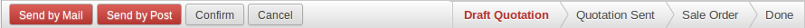
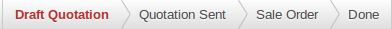
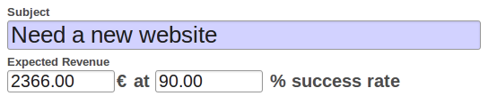
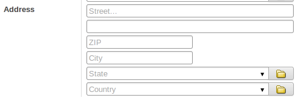
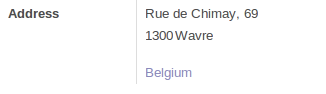
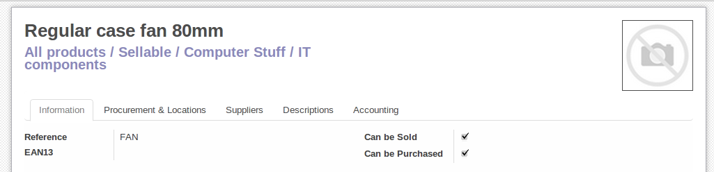

Общая структура
Объекты представлений являют собой набор полей в специальной модели данных, они являются необязательными, если явно не указано иное.
name(обязательно)полезно только в качестве мнемоники/человекочитаемого описания представления для обращения к конкретному представлению среди множества подобных
modelмодель данных, связанная с представлением, если такое возможно (это не относится к представлениям QWeb)
priorityклиентские программы могут запрашивать представления с помощью
idили(model, type). Для последнего будут найдены все виды для правильного типа и модели данных, и будет возвращен номер с самым низким номеромpriority(это и будет «представление по умолчанию»).priorityтакже определяет порядок применения во время: ref:[UNKNOWN NODE title_reference]archописание шаблона представления
groups_idMany2manyполе в котором указываются группы которым разрешено просмотр/использование текущего представленияinherit_idидентификатор родительского представления, см Наследование., по умолчанию не используется
modeмеханизм наследования, см. Наследование.. Если
inherit_idснят,modeможет быть толькоprimary. Еслиinherit_idустановлен, то по умолчанию будет назначен механизмextension, но может быть явно установлен вprimaryapplicationфункция веб-сайта, определяющая переключение представлений. По умолчанию представления всегда применяются
Наследование.
Соответствие представления
если представление запрашивается
(model, type), то идет сопоставление с правильной моделью и типом,mode = primaryс самым низким приоритетомкогда представление запрашивается по
id, если его режим не являетсяprimary, то сопоставляется его ближайший родитель с режимомprimary
Показать разрешение
Разрешение генерирует окончательный `` arch`` для запрошенного / согласованного `` первичного`` вида:
Если представление имеет родительский элемент, родительский элемент полностью разрешен, то применяются наследующие спецификации текущего представления
Если у представления нет родителя, его `` арка`` используется как есть
Просматриваются дочерние элементы текущего представления с режимом `` extension``, и их спецификации наследования применяются к глубине (применяется дочерний вид, затем его потомки, а затем его братья и сестры)
Результатом применения представлений дочерних элементов является окончательная `` арка``
Параметры наследования
Существует три типа спецификаций наследования:
Элемент `` xpath`` с атрибутом `` expr``. `` Expr`` - выражение XPath [#hasclass] _, примененное к текущей `` arch``, первый узел, который он находит, является совпадением
Элемент `` field`` с атрибутом `` name``, соответствует первому `` полюсу`` с тем же `` name``
Любой другой элемент, первый элемент с тем же именем и идентичными атрибутами (игнорирование `` position``) сопоставляется
Спецификация наследования может иметь необязательный атрибут `` position``, определяющий, как должен быть изменен согласованный узел:
- `` Внутри`` (по умолчанию)
Содержимое спецификации наследования добавляется к согласованному узлу
replaceСодержимое спецификации наследования заменяет согласованный узел
afterСодержимое спецификации наследования добавляется к родительскому элементу сопоставленного узла после того, как соответствующий узел
beforeСодержимое спецификации наследования добавляется к родительскому элементу сопоставленного узла, перед согласованным узлом
- Атрибуты:
В спецификации наследования должны быть элементы `` атрибута`` с атрибутом `` name`` и необязательным телом:
Если у элемента `` attribute`` есть тело, на соответствующем узле создается новый атрибут, названный по имени его `` name``, с текстом элемента `` attribute`` как значением
Если у элемента `` attribute`` нет тела, атрибут, названный после его `` name``, удаляется из согласованного узла. Если такой атрибут отсутствует, возникает ошибка
Спецификации представления применяются последовательно.
Списки
Корневым элементом представлений списков является `` <дерево> `` [#treehistory] _. Корень списка может иметь следующие атрибуты:
- Редактируемое
По умолчанию выбор строки представления списка открывает соответствующее: ref: [UNKNOWN NODE title_reference]. Атрибуты `` editable`` делают просмотр списка себя редактируемым на месте.
Допустимыми значениями являются `` top`` и `` bottom``, в результате чего * новые * записи появляются соответственно в верхней или нижней части списка.
Архитектура для inline: ref: [UNKNOWN NODE title_reference] выводится из представления списка. Большинство атрибутов, действительных в полях и кнопках ref: [UNKNOWN NODE title_reference], таким образом, принимаются представлениями списков, хотя они могут и не иметь никакого значения, если представление списка не редактируется
- По умолчанию Заказать
Переопределяет порядок представления, заменяя порядок по умолчанию для модели. Значение представляет собой список полей, разделенных запятой, с пометкой `` desc`` для сортировки в обратном порядке:
<tree default_order="sequence,name desc">
- Цвета:
Позволяет изменить цвет текста строки на основе атрибутов соответствующей записи.
Определяется как отображение цветов в выражения Python. Значения имеют вид:: samp: [UNKNOWN NODE title_reference]. Для каждой записи пары проверяются по порядку, выражение вычисляется для записи, и если `` true``, соответствующий цвет применяется к строке. Если цвет не соответствует, используется цвет текста по умолчанию (черный).
`` Color`` может быть любым допустимым [UNKNOWN NODE problematic]color unit '.
`` Expr`` должно быть выражением Python, оцененным с атрибутами текущей записи как значения контекста. Другими значениями контекста являются `` uid`` (id текущего пользователя) и `` current_date`` (текущая дата в виде строки в форме `` yyyy-MM-dd``)
- 11 Шрифты 225
Позволяет изменить стиль шрифта строки на основе атрибутов соответствующей записи.
Формат такой же, как для `` color``, но `` цвет`` каждой пары заменяется на `` bold``, `` italic`` или `` underline``, выражение, вычисляемое как `` True`` применит соответствующий стиль к тексту строки. В отличие от `` colors``, несколько пар могут соответствовать каждой записи
- `` Create``, `` edit``, `` delete``
Позволяет * dis * изменять соответствующее действие в представлении, устанавливая соответствующий атрибут на `` false``
- `` On_write``
Имеет смысл только в списке `` editable``. Должно быть именем метода в модели списка. Метод будет вызываться с `` id`` записи после создания или редактирования этой записи (в базе данных).
Метод должен возвращать список идентификаторов других записей для загрузки или обновления.
- Стринг
Альтернативный переводимый ярлык для представления
Не рекомендуется, начиная с версии 8.0: Больше не отображается
Возможными дочерними элементами представления списка являются:
Формы
Представления формы используются для отображения данных из одной записи. Их корневой элемент - `` <форма> [UNKNOWN NODE problematic]. Они состоят из обычного HTML с дополнительными структурными и семантическими компонентами.
Конструкционные элементы
Структурные компоненты обеспечивают структуру или «визуальные» функции с небольшой логикой. Они используются как элементы или наборы элементов в представлениях форм.
- Блокнот
Определяет секцию с вкладками. Каждая вкладка определяется через дочерний элемент `` page``. Страницы могут иметь следующие атрибуты:
- `` Строка`` (обязательно)
Заголовок вкладки
- `` Accesskey``
HTML accesskey
- `` attrs``
Стандартные динамические атрибуты, основанные на значениях записи
- Группа:
Используется для определения макетов колонок в формах. По умолчанию группы определяют 2 столбца, а большинство прямых потомков групп занимают один столбец. Прямые дочерние элементы `` поля`` по умолчанию отображают метку, а метка и само поле имеют colspan по 1 каждому.
Количество столбцов в `` group`` можно настроить с помощью атрибута `` col``, количество столбцов, взятых элементом, можно настроить с помощью `` colspan``.
Дети выложены горизонтально (пытается заполнить следующий столбец перед сменой строки).
Группы могут иметь атрибут `` строка``, который отображается как название группы
- новая строка
Полезен только внутри элементов `` group``, рано заканчивает текущую строку и сразу переключается на новую строку (без предварительного заполнения любого оставшегося столбца)
- --- SEPARATOR ---
Малый горизонтальный интервал с атрибутом `` строка`` ведет себя как заголовок раздела
- ЛИСТ
Может использоваться в качестве прямого потомка для `` формы`` для более узкой и гибкой формы макета
- Заголовок
В сочетании с `` sheet``, обеспечивает положение полной ширины над листом, как правило, используется для отображения кнопок рабочего процесса и виджетов состояния
Семантические компоненты
Семантические компоненты связывают и позволяют взаимодействовать с системой Odoo. Доступными семантическими компонентами являются:
- Кнопка
Вызов в систему Odoo, аналогично: ref: [UNKNOWN NODE title_reference]
fieldВизуализирует (и позволяет, возможно, выпуск) одного поля текущей записи. Возможные атрибуты:
name(обязательно)Имя отображаемого поля
- Виджет
Поля имеют рендеринг по умолчанию в зависимости от их типа (например: class: [UNKNOWN NODE title_reference],: class:` ~ openerp.fields.Many2one`). Атрибуты `` widget`` позволяют использовать другой метод визуализации и контекст.
- ОПЦИИ
Параметр конфигурации объекта JSON для виджета поля (включая виджеты по умолчанию)
- «Категория»
Класс HTML для установки на сгенерированный элемент, общие классы полей:
- `` Oe_inline``
Предотвратить обычный разрыв строки после полей
- `` Oe_left``, `` oe_right``
Floats поле в соответствующее направление
- `` Oe_read_only``, `` oe_edit_only``
Только отображает поле в соответствующем режиме формы
- `` Oe_no_button``
Позволяет избежать отображения кнопки навигации в классе: [UNKNOWN NODE title_reference]
- `` Oe_avatar``
Для полей изображения, отображает изображения как аватары (квадрат, максимальный размер 90x90, некоторые изображения)
groupsТолько отображает поле для определенных пользователей
- `` On_change``
Вызывает указанный метод, когда значение этого поля редактируется, может генерировать обновления других полей или отображать предупреждения для пользователя
Не рекомендуется, начиная с версии 8.0: Использование: func: [UNKNOWN NODE title_reference] на модели
- `` attrs``
Динамические мета-параметры, основанные на значениях записи
- домен;
Только для реляционных полей, фильтры, применяемые при отображении существующих записей для выбора
contextТолько для реляционных полей, контекст для передачи при получении возможных значений
- Только для чтения
Отображать поле как в режиме только для чтения, так и в редакторе, но никогда не редактируйте его
- Необходимое
Генерирует ошибку и предотвращает сохранение записи, если поле не имеет значения
- `` Nolabel``
Не отображать метку поля автоматически, имеет смысл только в том случае, если поле является прямым потомком элемента `` group``
- Подпись
Help сообщение для отображения в * empty * полях. Может заменять метки полей в сложных формах. * Не должно * быть примером данных, так как пользователи могут путать текст заполнитель с заполненными полями
modeFor: class: [UNKNOWN NODE title_reference], режим отображения (тип представления) для использования для связанных записей поля. Одно из «дерева», «форма», «канбан» или «граф». По умолчанию используется `` tree`` (отображение списка)
- помощь
Подсказка, отображаемая для пользователей при наведении курсора на поле или его метку
filenameДля двоичных полей, имя связанного поля, предоставляющего имя файла
- Пароль:
Указывает, что поле a: class: [UNKNOWN NODE title_reference] хранит пароль и что его данные не должны отображаться
Рекомендации для бизнес-представлений
Представление для бизнеса предназначено для обычных пользователей, а не для продвинутых пользователей. Примеры: возможности, продукты, партнеры, задачи, проекты и т. Д.

В общем, бизнес-представление состоит из
Верхняя строка состояния (с техническим или бизнес-потоком),
Лист в середине (сама форма),
Нижняя часть с историей и комментариями.
Технически новые представления форм структурированы следующим образом в XML
<form>
<header> ... content of the status bar ... </header>
<sheet> ... content of the sheet ... </sheet>
<div class="oe_chatter"> ... content of the bottom part ... </div>
</form>
Строка состояния
Цель строки состояния - показать состояние текущей записи и кнопок действий.
Статус
Использует виджет `` statusbar`` и показывает текущее состояние красным цветом. Состояния, общие для всех потоков (например, заказ на продажу начинается как котировка, затем мы отправляем его, затем он становится полным заказом на продажу, и, наконец, он выполняется) должны быть видимыми всегда, но исключениями или состояниями в зависимости от конкретного подкаталога -flow должен быть видимым только при текущем.

Состояния отображаются в соответствии с порядком, используемым в поле (список в поле выбора и т. Д.). Состояния, которые всегда видимы, задаются атрибутом `` statusbar_visible``.
<field name="state" widget="statusbar"
statusbar_visible="draft,sent,progress,invoiced,done" />
Лист
Все бизнес-представления должны выглядеть как отпечатанные листы:

Элементы внутри `` <form> `` или `` <page> `` не определяют группы, элементы внутри них выложены в соответствии с нормальными правилами HTML. Их содержимое может быть сгруппировано в явном виде, используя элементы `` <group> `` или обычные `` <div> [UNKNOWN NODE problematic].
По умолчанию элемент
<группа>определяет два столбца внутри, если не используется атрибут `` col = "n". Столбцы имеют одинаковую ширину (1 / n-й ширины группы). Используйте элемент ``<group>для создания столбца полей.Чтобы присвоить заголовок разделу, добавьте атрибут `` string`` в элемент `` <group> ``
<group string="Time-sensitive operations">
Это заменяет прежнее использование `` <separator string = "XXX" /> [UNKNOWN NODE problematic].
Элемент `` <field> `` не создает метку, за исключением прямых потомков элемента
<group>"[# обратная совместимость] _. Используйте: samp: [UNKNOWN NODE problematic]<label for = " {field_name}> [UNKNOWN NODE problematic]для создания метки поля.
Заголовки листов
На некоторых листах есть заголовки с одним или несколькими полями, а метки этих полей отображаются только в режиме редактирования.
Режим просмотра | РЕЖИМ РЕДАКТИРОВАНИЯ |
|---|---|
 |  |
Используйте HTML-текст, `` <div> , `` <h1> ``, `` <h2> `` ... для создания хороших заголовков и `` <label> `` с классом `` oe_edit_only, чтобы Только отображать метку поля в режиме редактирования. Класс `` oe_inline`` сделает поля inline (вместо блоков): содержимое, следующее за этим полем, будет отображаться в той же строке, а не в строке под ней. Форма выше приведена в следующем XML
<label for="name" class="oe_edit_only"/>
<h1><field name="name"/></h1>
<label for="planned_revenue" class="oe_edit_only"/>
<h2>
<field name="planned_revenue" class="oe_inline"/>
<field name="company_currency" class="oe_inline oe_edit_only"/> at
<field name="probability" class="oe_inline"/> % success rate
</h2>
Кнопочный ящик
В форме могут отображаться многие релевантные действия или ссылки. Например, в форме Opportunity важное место в использовании CRM занимают действия «Расписание вызова» и «Расписание собрания». Вместо того, чтобы помещать их в меню «Дополнительно», поместите их прямо в лист в виде кнопок (вверху справа), чтобы сделать их более видимыми и более доступными.

Технически кнопки размещаются внутри `` <div> [UNKNOWN NODE problematic], чтобы сгруппировать их как блок с правой стороны листа.
<div class="oe_button_box oe_right">
<button string="Schedule/Log Call" name="..." type="action"/>
<button string="Schedule Meeting" name="action_makeMeeting" type="object"/>
</div>
Группы и заголовки
Теперь столбец полей создается с элементом `` <group> [UNKNOWN NODE problematic], с необязательным заголовком.

<group string="Payment Options">
<field name="writeoff_amount"/>
<field name="payment_option"/>
</group>
Рекомендуется использовать в форме два поля полей. Для этого просто поместите элементы `` <group> [UNKNOWN NODE problematic], содержащие поля внутри элемента верхнего уровня `` <group> [UNKNOWN NODE problematic].
Чтобы сделать: ref: [UNKNOWN NODE title_reference] [UNKNOWN NODE title_reference] [UNKNOWN NODE title_reference] в элементы` [UNKNOWN NODE title_reference] [UNKNOWN NODE problematic], поэтому новые поля могут быть легко добавлены справа место.
Особый случай: Промежуточные итоги
Некоторые классы определены для визуализации промежуточных итогов, например, в формах счетов:

<group class="oe_subtotal_footer">
<field name="amount_untaxed"/>
<field name="amount_tax"/>
<field name="amount_total" class="oe_subtotal_footer_separator"/>
<field name="residual" style="margin-top: 10px"/>
</group>
Заполнители и встроенные поля
Иногда полевые метки делают форму слишком сложной. Можно опустить полевые метки и вместо этого поместить поле в поле. Текст заполнителя отображается только в том случае, если поле пуст. Заполнитель должен указывать, что размещать внутри поля, он * не должен * быть примером, поскольку их часто путают с заполненными данными.
Можно также объединить поля вместе, сделав их «встроенными» внутри явного блока, например `` <div> [UNKNOWN NODE problematic]. Это позволяет группировать семантически связанные поля, как если бы они были едиными (составными) полями.
Следующий пример, взятый из формы * Leads [UNKNOWN NODE problematic], показывает как заполнители, так и встроенные поля (zip и city).
РЕЖИМ РЕДАКТИРОВАНИЯ | Режим просмотра |
|---|---|
|  |  |
<group>
<label for="street" string="Address"/>
<div>
<field name="street" placeholder="Street..."/>
<field name="street2"/>
<div>
<field name="zip" class="oe_inline" placeholder="ZIP"/>
<field name="city" class="oe_inline" placeholder="City"/>
</div>
<field name="state_id" placeholder="State"/>
<field name="country_id" placeholder="Country"/>
</div>
</group>
Изображения
Изображения, такие как аватары, должны отображаться справа от листа. Форма продукта выглядит так:
Форма выше содержит элемент <sheet>, который начинается с:
<field name="product_image" widget="image" class="oe_avatar oe_right"/>
Теги
Большинство: класс: поля [UNKNOWN NODE title_reference], как и категории, лучше отображаются в виде списка тегов. Используйте виджет `` many2many_tags`` для этого:

<field name="category_id" widget="many2many_tags"/>
Руководства по формам конфигурации
Примеры конфигурационных форм: этапы, тип отпуска и т. Д. Это касается всех пунктов меню Конфигурация каждого приложения (например, Sales / Configuration).

Нет заголовка (потому что нет состояния, рабочего процесса, нет кнопки)
Без листа
Форматы диалоговых форм
Пример: "Расписание звонков" из возможности.

Избегать разделителей (заголовок уже находится в строке заголовка всплывающего окна, поэтому другой разделитель не имеет значения)
Избегать кнопок отмены (пользователь обычно закрывает всплывающее окно, чтобы получить тот же эффект)
Кнопки действий должны быть выделены (красным)
При наличии текстовой области используйте метку-заполнитель вместо метки или разделителя
Как и в регулярном представлении формы, поместите кнопки в элементе <header>
Рекомендации по настройке Wizards
Пример: Настройки / Конфигурация / Продажи.
Всегда в строке (без всплывающих окон)
Без листа
Удерживайте кнопку отмены (пользователи не могут закрыть окно)
Кнопка "Применить" должна быть красной
Графики
Графовое представление используется для визуализации агрегатов по нескольким записям или группам записей. Его корневым элементом является `` <graph> [UNKNOWN NODE problematic], который может принимать следующие атрибуты:
typeОдин из `` bar`` (по умолчанию), `` pie``, `` line`` и `` pivot``, тип используемого графика (`` pivot` ') технически не является типом графа, он Отображает агрегацию как сводную таблицу)
- Составные
Используется только для карт `` bar``. Если присутствует и установлен в `` True``, стеки баров внутри группы
Единственным допустимым элементом в графовом представлении является `` поле``, которое может иметь следующие атрибуты:
- Имя (обязательно)
Имя поля для использования в виде графа. Если используется для группировки (а не объединения)
typeУказывает, должно ли поле использоваться как критерий группировки или как агрегированное значение внутри группы. Возможные значения:
- `` Row`` (по умолчанию)
Групп по указанному полю. Все типы графиков поддерживают по крайней мере один уровень группировки, некоторые могут поддерживать больше. Для сводных таблиц каждая группа получает свою строку.
- Колумбия
Используется только сводными таблицами, создает столбцы
- Управления
Поле для группировки внутри группы
- ИНТЕРВАЛ
По дате и дате и времени, группам по заданному интервалу (`` `` `` `` `` `` `` `` `` `` `` `` `` `` `` `` `` Фиксированное второе разрешение) или дата (фиксированное разрешение по дням).
Предупреждение
Агрегирование графовых представлений выполняется по содержимому базы данных, не сохраняемые поля функций нельзя использовать в графических представлениях
Kanban
Вид канбана представляет собой визуализацию kanban board: он отображает записи как« карты », на полпути между: ref:` list view <reference / views / list> »и нередактируемым: ref:` form view <ссылка / вид / форма> [UNKNOWN NODE problematic]. Записи могут быть сгруппированы в столбцы для использования в визуализации рабочего процесса или в манипуляции (например, задачи или управление прогрессом) или негруппированы (используются просто для визуализации записей).
Корневым элементом представления Kanban является `` <kanban> [UNKNOWN NODE problematic], он может использовать следующие атрибуты:
- `` default_group_by``
Следует ли группировать представление канбанов, если группировка не указана с помощью действия или текущего поиска. Должно быть именем поля, в которое нужно группировать, если никакая другая группировка не указана
- По умолчанию Заказать
Порядок сортировки карточек, если пользователь еще не отсортировал записи (через просмотр списка)
- «Категория»
Добавляет HTML-классы к корневому элементу HTML представления Kanban
- `` Quick_create``
Следует ли создавать записи без переключения на вид. По умолчанию, `` quick_create`` включается, когда представление Kanban сгруппировано и отключено, если нет.
Установите `` true``, чтобы всегда включать его, и `` false``, чтобы всегда отключать его.
Возможными дочерними элементами элемента вида являются:
fieldОбъявляет поля для агрегирования или для использования в канбан * logic [UNKNOWN NODE problematic]. Если поле просто отображается в виде канбана, его не нужно предварительно объявлять.
Возможные атрибуты:
- Имя (обязательно)
Имя поля для извлечения
- `` Сумма``, `` avg``, `` min``, `` max``, [UNKNOWN NODE title_reference]
Отображает соответствующую агрегацию в верхней части столбца канбана, значением поля является метка агрегации (строка). Поддерживается только одна агрегированная операция для поля.
- Шаблоны
Определяет список шаблонов: ref: [UNKNOWN NODE title_reference]. Определение карточек может быть разбито на несколько шаблонов для ясности, но представления канбанов * должны * определять хотя бы один корневой шаблон `` kanban-box``, который будет отображаться один раз для каждой записи.
Представление kanban использует в основном стандарт: ref: [UNKNOWN NODE title_reference] и предоставляет следующие контекстные переменные:
- Приложение
Текущий: ref: [UNKNOWN NODE title_reference] instance
- Виджет
Текущий: js: class: [UNKNOWN NODE title_reference], может быть использован для извлечения некоторой метаинформации. Эти методы также доступны непосредственно в контексте шаблона и не требуют доступа через `` widget``
recordОбъект со всеми запрошенными полями в качестве его атрибутов. Каждое поле имеет два атрибута `` значение`` и `` raw_value``, первый отформатирован в соответствии с текущими пользовательскими параметрами, последний является прямым значением из: meth: [UNKNOWN NODE title_reference] (кроме Для полей даты и времени суток, отформатированных в соответствии с языковой настройкой пользователя <https://github.com/odoo/odoo/blob/8.0/addons/web_kanban/static/src/js/kanban.js#L900> [UNKNOWN NODE problematic]_)
- `` read_only_mode``
сам за себя
Кнопки и поля
Хотя большинство шаблонов Kanban являются стандартными: ref: [UNKNOWN NODE title_reference], элементы представления Kanban` `` `` `` `` `` `` `` `` `` `` `` `` `` специально `
Поля по умолчанию заменяются их форматированным значением, если они не соответствуют конкретным видам отображения канбанов
Кнопки и ссылки с атрибутом `` type`` стали выполнять операции, связанные с Одо, а не их стандартную функцию HTML. Возможные типы:
- `` Действие``, `` объект``
Стандартное поведение для: ref: [UNKNOWN NODE title_reference], можно использовать большинство атрибутов, относящихся к стандартным кнопкам Odoo.
- Открыть
Открывает запись карты в режиме формы в режиме только для чтения
- Редактировать
Открывает запись карты в режиме формы в редактируемом режиме
deleteУдаляет запись карты и удаляет карту.
API Javascript
class KanbanRecord()
: Js: class: [UNKNOWN NODE title_reference], обрабатывающий рендеринг отдельной записи на карту. Доступный в пределах его собственного представления как `` виджет`` в контексте шаблона.
kanban_color(raw_value)
Преобразует значение цветовой сегментации в класс цветов канбана: samp: [UNKNOWN NODE title_reference]. Встроенный CSS предоставляет классы до `` color_index`` от 9.
kanban_getcolor(raw_value)
Преобразует значение цветовой сегментации в индекс цвета (по умолчанию - от 0 до 9). Значения сегментирования цвета могут быть как числами, так и строками.
kanban_image(model, field, id[, cache][, options])
Создает URL-адрес для указанного поля в качестве доступа к изображению.
- model (
String) -- Модель хостинга изображения - field (
String) -- Имя поля, содержащего данные изображения - id -- Идентификатор записи, содержащей изображение для отображения
- cache (
Number) -- Продолжительность кеширования (в секундах) браузера по умолчанию должна быть переопределена. `` 0`` полностью отключает кэширование
kanban_text_ellipsis(string[, size=160])
Вырезает текст за пределы указанного размера и добавляет к нему многоточие. Может использоваться для отображения начальной части потенциально очень длинных полей (например, описаний) без риска громоздких карточек
Календарь
Представления календаря отображают записи как события в ежедневном, недельном или месячном календарях. Их корневым элементом является `` <календарь> [UNKNOWN NODE problematic]. Доступными атрибутами в представлении календаря являются:
- `` Date_start`` (обязательно)
Имя поля записи, содержащее дату начала события
- `` date_stop``
Имя поля записи, содержащее дату окончания события, если предоставляется `` date_stop``, записи становятся подвижными (с помощью перетаскивания) непосредственно в календаре
- `` date_delay``
Альтернатива `` date_stop``, обеспечивает продолжительность события, а не его дату окончания
- Цвет
Имя поля записи, используемое для * сегментации цвета [UNKNOWN NODE problematic]. Записи в одном и том же цветовом сегменте выделяются в календаре тем же цветом подсветки, цвета распределяются полу-случайным образом.
- `` event_open_popup``
Открывает событие в диалоговом окне вместо переключения на представление формы, включенное по умолчанию
- `` Quick_add``
Включает создание быстрых событий при щелчке: запрашивает у пользователя `` имя`` и пытается создать новое событие именно с этим и временем события щелчка. Возвращается к полному диалоговому окну формы, если быстрое создание не выполняется
- Дисплей
Формат строки для отображения событий, имена полей должны быть в скобках `` `` `` `` `` `
- Весь день
Имя булевского поля в записи, указывающее, отмечено ли соответствующее событие как дневное (а продолжительность не имеет значения)
Ганта
Представления Гантта должным образом отображают диаграммы Ганта (для планирования).
Корневым элементом представлений gantt является `` <gantt /> [UNKNOWN NODE problematic], у него нет потомков, но он может принимать следующие атрибуты:
- `` Date_start`` (обязательно)
Имя поля, указывающее начало и дату начала события для каждой записи.
- `` date_stop``
Имя поля, указывающее конечную продолжительность события для каждой записи. Может быть заменено на `` date_delay``. Должна быть предоставлена одна (и только одна) [UNKNOWN NODE title_reference] и` [UNKNOWN NODE title_reference].
Если это поле `` False`` для записи, предполагается, что это «событие точки», и конечная дата будет установлена на дату начала
- `` date_delay``
Название поля, указывающее продолжительность события
- Прогресс:
Имя поля, предоставляющего процент завершения для события записи, от 0 до 100
- `` default_group_by``
Имя поля для группировки задач по
Диаграмма 4.
Вид диаграммы может использоваться для отображения ориентированных графиков записей. Корневой элемент `` <диаграмма> `` и не имеет атрибутов.
Возможными дочерними элементами диаграммы являются:
- `` Node`` (обязательно, 1)
Определяет узлы графа. Его атрибутами являются:
- 1.1 Цель
Модель Одо в узле
- Форма
Условное отображение формы, подобное цветам и шрифтам в: ref: [UNKNOWN NODE title_reference]. Единственной допустимой формой является `` rectangle`` (форма по умолчанию - многоточие)
- цвет фона
То же, что и `` shape``, но условно отображает фоновый цвет для узлов. По умолчанию цвет фона - белый, единственной допустимой альтернативой является `` grey``.
- `` Arrow`` (обязательно, 1)
Определяет направленные ребра графа. Его атрибутами являются:
- `` Object`` (обязательно)
Модель Одо для края
- `` Source`` (обязательно)
: Class: [UNKNOWN NODE title_reference] поле модели ребра, указывающее на запись исходного узла ребра
- `` Destination`` (обязательно)
: Class: [UNKNOWN NODE title_reference] поле модели ребра, указывающее на запись целевого узла ребра
- Метка
Список атрибутов Python (в виде цитируемых строк). Соответствующие значения атрибутов будут объединены и отображены как метка ребра
- Метка
Пояснительная записка для диаграммы, атрибут `` строка`` определяет содержание заметки. Каждая `` метка`` выводится как параграф в заголовке диаграммы, легко видимая, но без особого акцента.
Поиск
Представления поиска представляют собой разрыв с предыдущими типами представления, поскольку они не отображают * content [UNKNOWN NODE problematic]: хотя они применяются к определенной модели, они используются для фильтрации содержимого другого представления (как правило, агрегированные представления, например: ref: [UNKNOWN NODE title_reference] reference / views / graph`). Помимо этого различия в случае использования они определяются одинаково.
Корневым элементом представлений поиска является [UNKNOWN NODE title_reference] [UNKNOWN NODE problematic]. Он не принимает атрибутов.
Возможные дочерние элементы в окне поиска:
fieldПоля определяют домены или контексты с пользовательскими значениями. Когда генерируются поисковые домены, домены полей составляются друг с другом и с фильтрами, используя ** AND [UNKNOWN NODE problematic].
Поля могут иметь следующие атрибуты:
nameИмя поля для фильтрации
- Стринг
Ярлык поля
- оператору.
По умолчанию поля генерируют домены вида: samp: [UNKNOWN NODE title_reference], где [UNKNOWN NODE title_reference] - это имя поля, а` provided_value`` - значение, предоставленное Пользователь, возможно фильтруемый или преобразованный (например, ожидается, что пользователь предоставит метку * значения поля выбора, а не само значение).
Атрибут `` operator`` позволяет переопределять оператор по умолчанию, который зависит от типа поля (например, `` `` для полей с плавающей запятой, но `` ilike`` для полей символов)
- `` Filter_domain``
Полный домен, который можно использовать в качестве домена поиска поля, может использовать переменную `` self`` для вставки предоставленного значения в пользовательский домен. Может использоваться для генерации значительно более гибких доменов, чем только «оператор» (например, поиск по нескольким полям одновременно)
Если указаны как `` operator``, так и `` filter_domain``, приоритет имеет `` filter_domain``.
contextПозволяет добавлять контекстные ключи, в том числе предоставляемое пользователем значение (которое, как и для «домена», доступно как переменная `` self``). По умолчанию поля не генерируют домены.
Примечание
Домен и контекст включены и оба генерируются, если указан «контекст». Чтобы только генерировать значения контекста, установите `` filter_domain`` в пустой список:
filter_domain = "[]"groupsСделать поле доступным только для определенных пользователей
- Виджет
Используйте конкретный виджет поиска для поля (единственный случай использования в стандарте Odoo 8.0 - это виджет `` selection`` для полей: class: [UNKNOWN NODE title_reference])
- домен;
Если поле может обеспечить автоматическое завершение (например: class: [UNKNOWN NODE title_reference]), отфильтрует возможные результаты завершения.
- Фильтр:
Фильтр - это предопределенный переключатель в окне поиска, его можно включить или отключить. Его основными целями являются добавление данных в контекст поиска (контекст, передаваемый в представление данных для поиска / фильтрации), или для добавления новых разделов в фильтр поиска.
Фильтры могут иметь следующие атрибуты:
- `` Строка`` (обязательно)
Метка фильтра
- домен;
A Odoo: ref: [UNKNOWN NODE title_reference], будет добавлен к домену действия как часть домена поиска
contextСловарь Python, объединенный в домен действия для создания домена поиска
nameЛогическое имя фильтра, может использоваться для: ref: [UNKNOWN NODE title_reference], также может использоваться как: ref: [UNKNOWN NODE title_reference]
- помощь
Более длинный пояснительный текст для фильтра, может отображаться в виде всплывающей подсказки
groupsДелает фильтр доступным только для определенных пользователей
- Знак
Значок рядом с меткой, если есть достаточно места
Не рекомендуется, начиная с версии 7.0.
Совет
Добавлено в версии 7.0.
Последовательности фильтров (без разделения без фильтров) рассматриваются как включенные композиции: они будут состоять из `` ИЛИ``, а не обычного `` И``, например
<filter domain="[('state', '=', 'draft')]"/> <filter domain="[('state', '=', 'done')]"/>
Если выбраны оба фильтра, выберет записи, `` состояние`` которых `` draft`` или `` done``, но
<filter domain="[('state', '=', 'draft')]"/> <separator/> <filter domain="[('delay', '<', 15)]"/>
Если выбраны оба фильтра, выберет записи, `` состояние`` которых является `` сквозным`` [UNKNOWN NODE problematic], а ** `` задержка`` - ниже 15.
- --- SEPARATOR ---
Может использоваться для разделения групп фильтров в простых просмотрах поиска
- Группа:
Может использоваться для разделения групп фильтров, более читаемых, чем `` разделитель`` в сложных представлениях поиска
Поиск по умолчанию
Поля и фильтры поиска можно настроить с помощью контекста действия, используя ключи: samp: [UNKNOWN NODE title_reference]. Для полей значение должно быть значением, установленным в поле, для фильтров это логическое значение. Например, предполагая, что `` foo`` является полем, а `` bar`` - фильтром, контекстом действия:
{
'search_default_foo': 'acro',
'search_default_bar': 1
}
Автоматически активирует фильтр `` bar`` и ищет поле `` foo`` для * acro [UNKNOWN NODE problematic].
Qweb
Представления QWeb являются стандартными: ref: [UNKNOWN NODE title_reference] шаблоны внутри` [UNKNOWN NODE title_reference]. У них нет определенного корневого элемента.
Вид QWeb может содержать только один шаблон [#template_inherit] _, а имя шаблона * должно * совпадать с полным представлением (включая имя модуля): term: [UNKNOWN NODE title_reference].
: Ref: [UNKNOWN NODE title_reference] следует использовать в качестве ярлыка для определения представлений QWeb.
По причинам обратной совместимости
Добавлена функция расширения для более простого соответствия в представлениях QWeb: `` hasclass (* classes) `` соответствует, если контекстный узел имеет все указанные классы
По историческим причинам он имеет свое происхождение из древовидных представлений, позже переориентированных на отображение большего количества таблиц / списков
Или нет шаблона, если это наследуемое представление, тогда: ref: [UNKNOWN NODE title_reference]